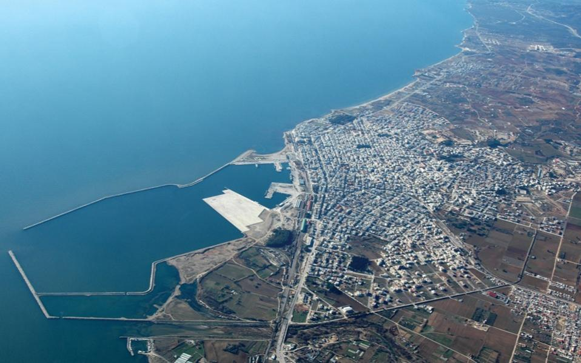

Μέλη της ομάδας:
- Αλέξανδρος Κεσίδης 4241
- Γεώργιος Γλήνιας 4136
Αλέξανδρος Κεσίδης:
Γλώσσες Προγραμματισμού: Java, C++, Pascal, HTML, Python και PHP
Τόπος Καταγωγής: Δράμα, Περιθώρι
Γεώργιος Γλήνιας:
Γλώσσες Προγραμματισμού: Java, C++, HTML και Python
Τόπος Καταγωγής: Αλεξανδρούπολη
